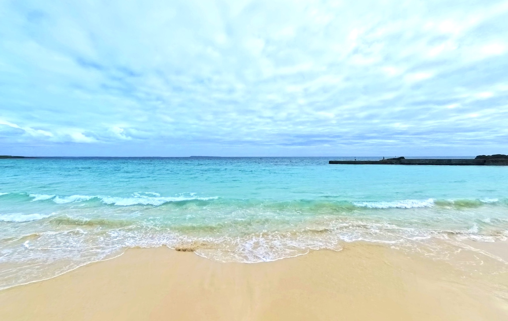
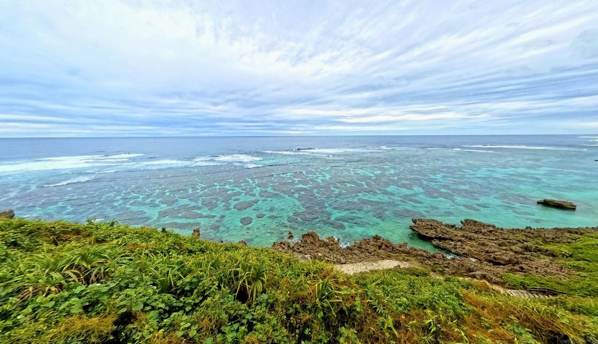
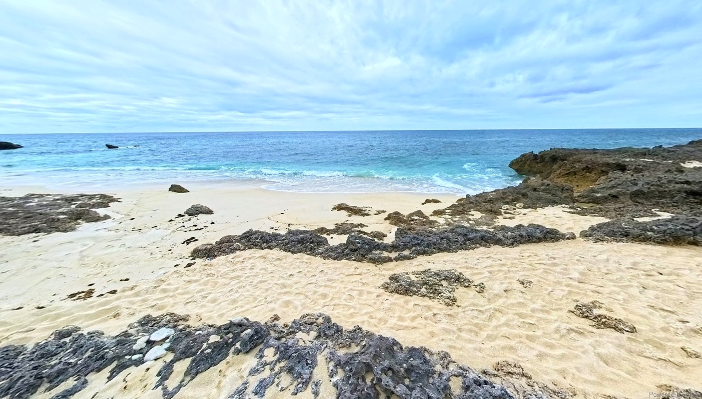

360° VIEWVirtual Tour
01
波打ち際に広がる宮古ブルー
白い砂浜に寄せる波と、淡い青から深い青へ変化する海を感じる。
CONCEPT
白い砂浜、透き通る海、どこまでも続く水平線。
宮古島の景色をゆっくりとめぐりながら、
ゆったりと流れる島時間を、心ゆくまでお楽しみください。
EXPLORE MIYAKOJIMA
カードの矢印を押すと、360°ツアーが開きます。

360° VIEWVirtual Tour
01
白い砂浜に寄せる波と、淡い青から深い青へ変化する海を感じる。

360° VIEWVirtual Tour
02
高台から広がる珊瑚礁と、水平線まで続く雄大な海景色を楽しむ。

360° VIEWVirtual Tour
03
黒い岩礁に囲まれた白砂の浜で、静けさと澄んだ海の色に包まれる。
THE JOURNEY BEGINS HERE